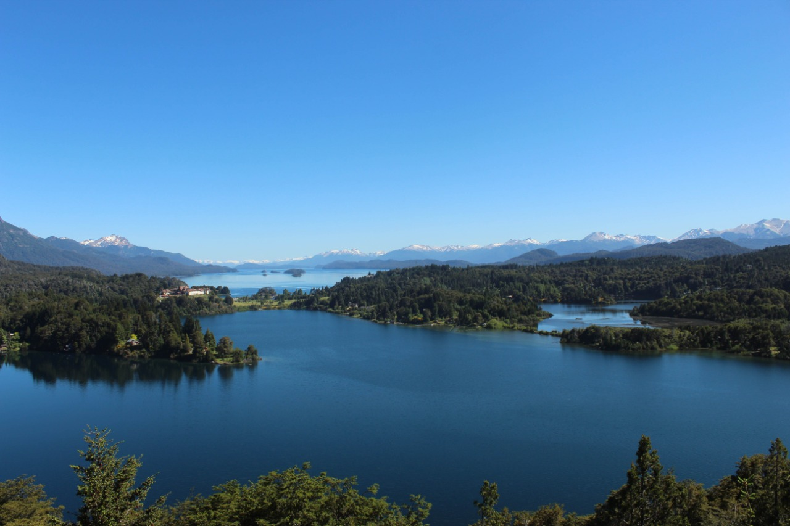
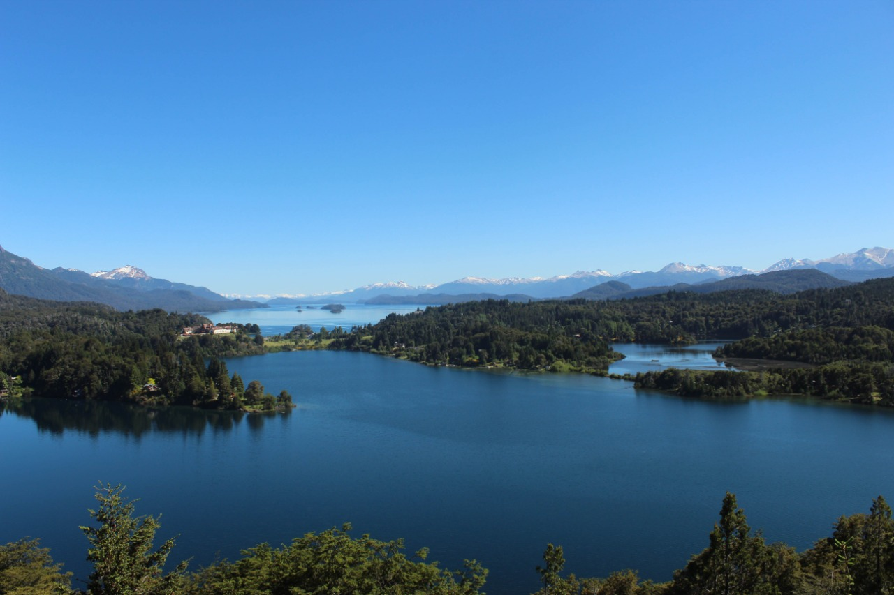
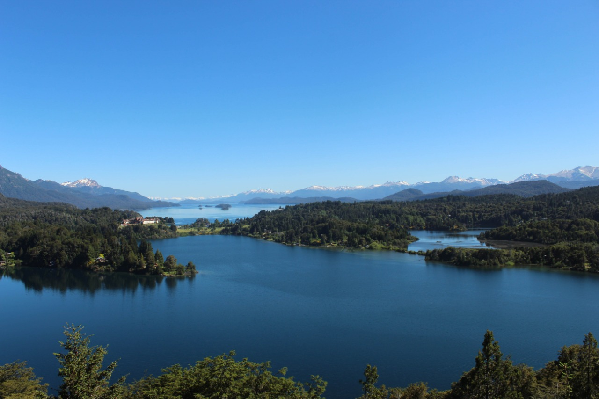

En 2017 viaje por un día al valle del venado, en la región del maule, hay que caminar mucho para llegar al valle pero la vista es hermosa. En 2018 al salir de cuarto medio, en la gira de estudios viajamos a Bariloche, Argentina, es una ciudad turistica que tiene un lago muy bonito. En 2022 viaje con unos amigo a el Peñasco en linares, región del maule, nos quedamos cerca de un río muy bonito, en el atardecer el agua tenia una temperatura muy agradable para bañarse.
